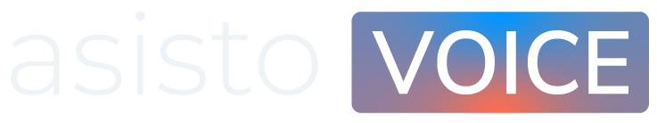

Atendimento que escuta, acompanha e resolve.
A central inteligente de atendimento que organiza conversas, acompanha jornadas e garante resolução real, com a voz como principal canal de conexão. Tudo é registrado, rastreado e integrado em um único fluxo de relacionamento.
Posicionamento
Humano, organizado e resolutivo
O Asisto Voice se posiciona como o cérebro do relacionamento por voz. Ele acompanha cada interação, organiza históricos e garante continuidade no atendimento, independentemente do canal usado. E é universal: toda empresa precisa ouvir. Por isso ele se adapta a diferentes segmentos, volumes de atendimento e complexidades de operação, garantindo organização, continuidade e resolução, sem perder o toque humano.

O que entrega
O que entrega?
Atendimento
- Atendimento por voz ativa e receptiva
- Centralização de todos os contatos
- Continuidade entre canais
- Integração com WhatsApp, chat, webchat e e-mail
Organização
- Histórico completo por cliente
- Organização automática das interações
- Registro e rastreabilidade
- Visão clara da jornada do cliente
- Relacionamento estruturado
Operação
- Distribuição inteligente de atendimentos
- Controle de filas
- Gestão de tempo de atendimento
- Escalabilidade de operação
Controle
- Gravação de chamadas
- Monitoramento em tempo real
- Indicadores operacionais
Para quem
Para quem é?
Operações que usam voz como principal canal
Empresas que precisam de atendimento contínuo
Negócios com alto volume de contatos
Times que precisam de histórico organizado
Empresas que lidam com demandas complexas
Operações que exigem rastreabilidade
Negócios que precisam acompanhar cada caso
Empresas que valorizam atendimento humano
Escala comprovada
Quem já usa
Quer ver o Asisto Voice na sua operação?
Fale com a gente pelo WhatsApp e entenda o melhor caminho para estruturar seu atendimento.